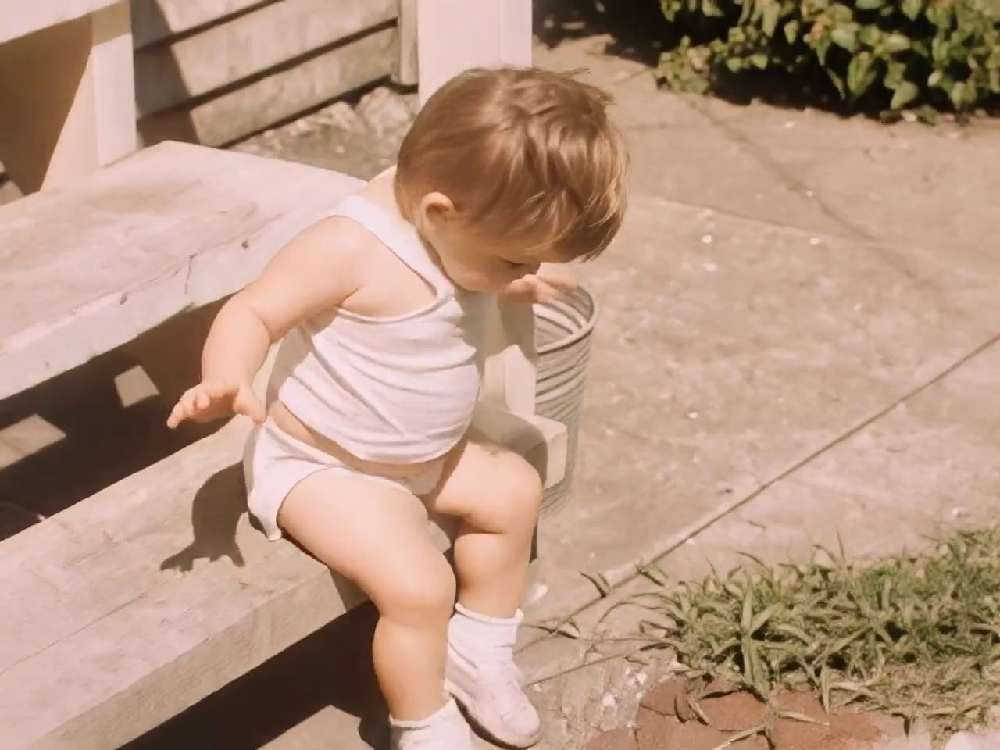
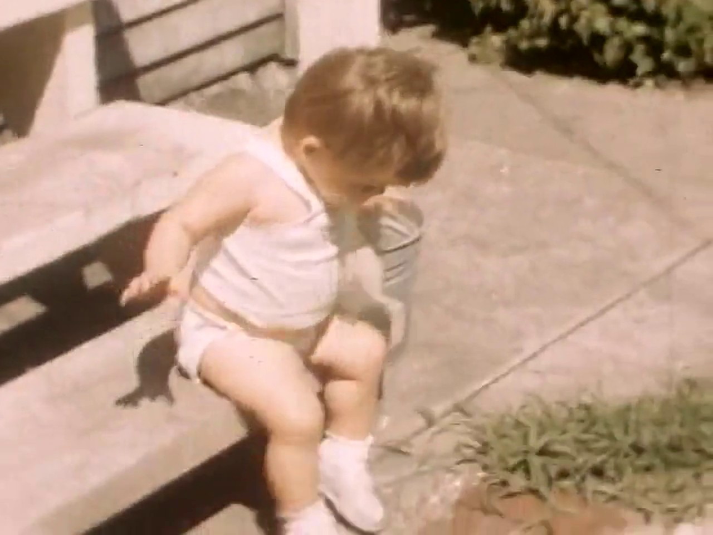
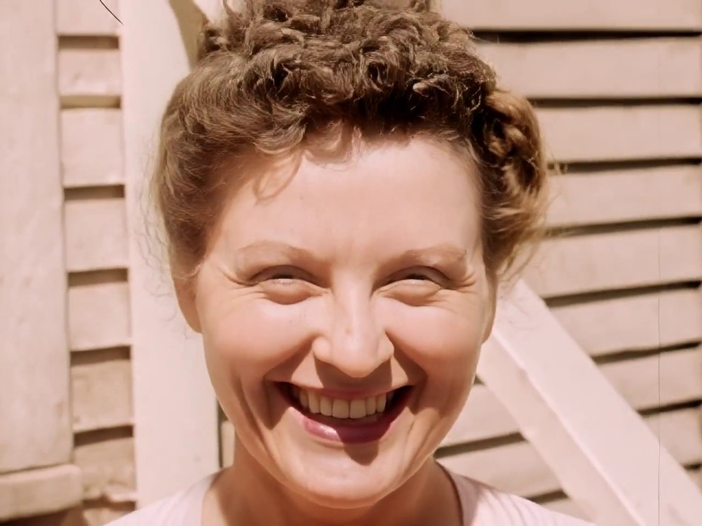
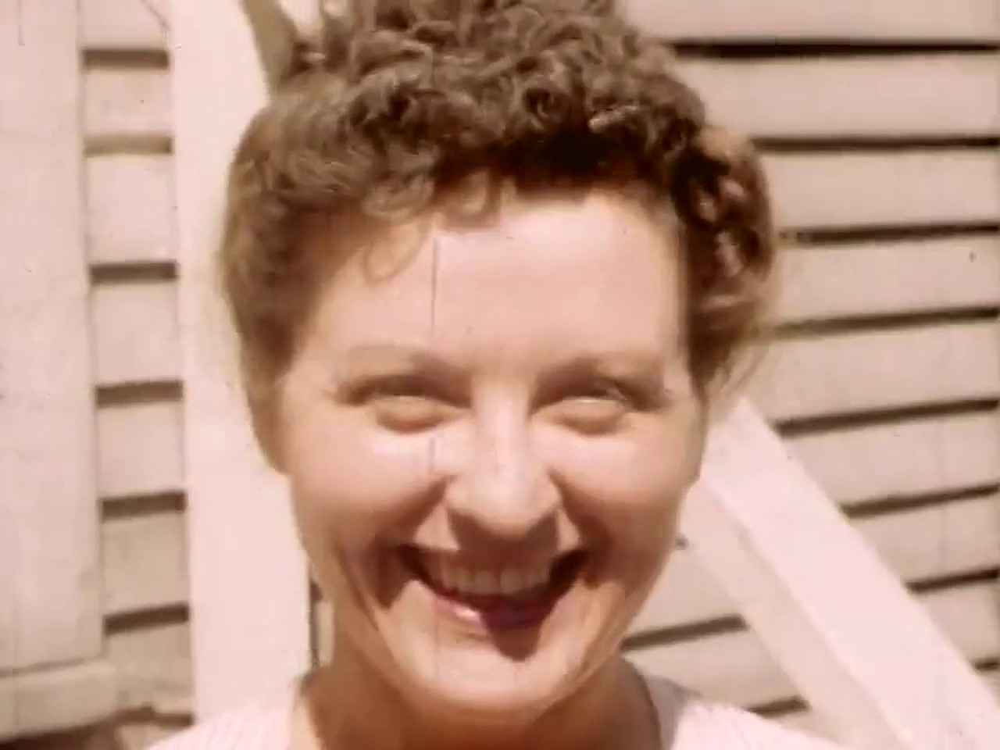
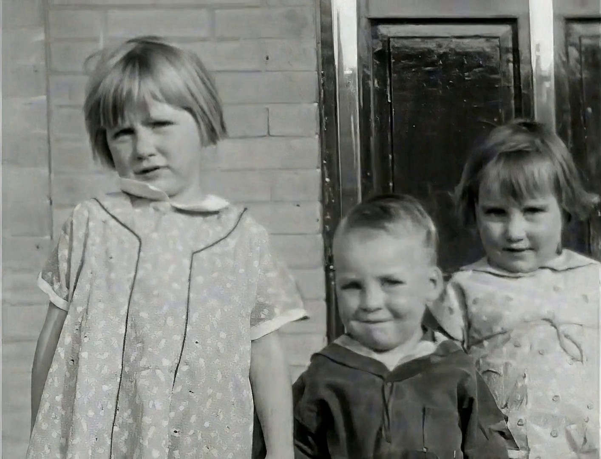
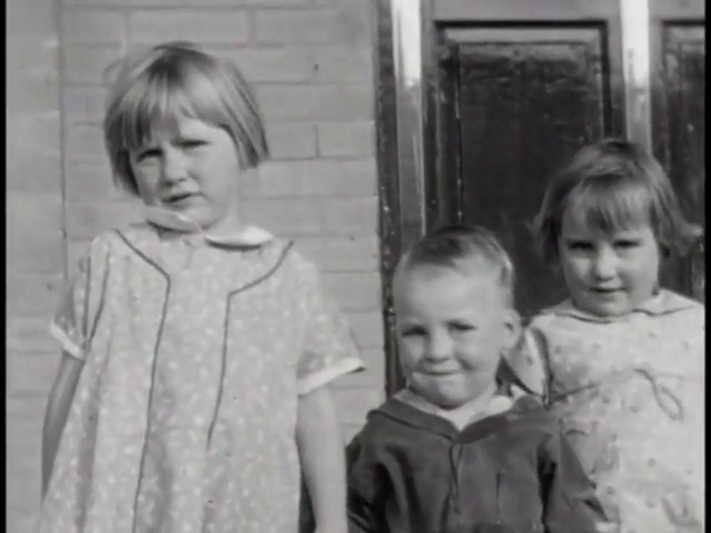
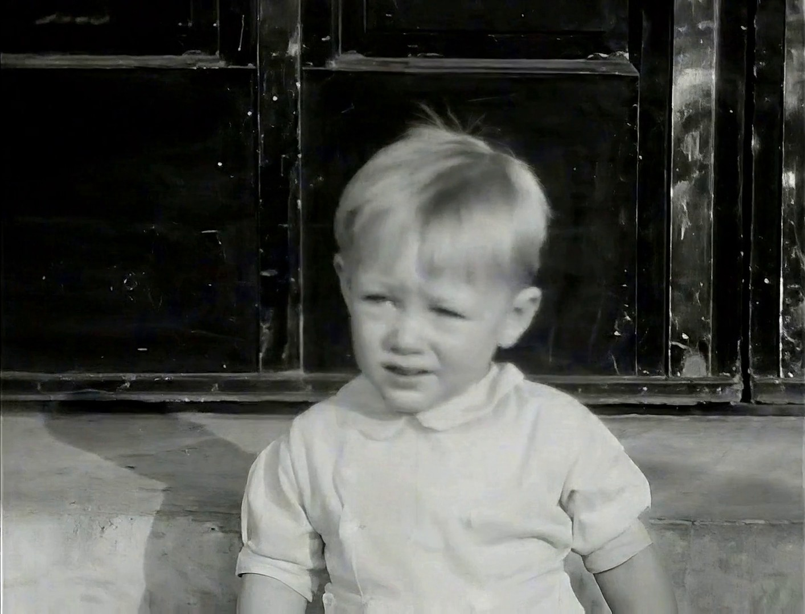

Phoenix Upscaler
Old video looks old.
This fixes that.
Tapes, DVDs, film scans, and the phone videos you shot in 2012 that looked fine then and look like a postage stamp now. Phoenix strips the noise, sorts out combed motion, and rebuilds the detail that compression and cheap sensors threw away.
It runs on your own computer. The footage never leaves it.
One payment. Every update included. Try it free on 60-second clips first.
It is not just tapes
Phoenix was built for VHS, and tape is still the hardest case it handles. But lost resolution, compression, noise and combed motion are the same problems on almost any old footage, whatever recorded it.
Phone video from the 2010s
480p and 720p clips, compressed hard by a phone with a tiny sensor. The most common thing people bring Phoenix, and often the most rewarding, because the subject is usually someone you know.
Tape, DVD and camcorder
VHS, Hi8, MiniDV, wedding DVDs. Interlaced, noisy, colour-bled. Deinterlacing and noise removal are on by default for these, and the detail underneath is usually better than the tape suggests.
Film scans
8mm and Super 8 transfers, where grain is part of the image rather than a defect. The Film preset keeps it instead of smoothing the picture into plastic.
Your own back catalogue
Old uploads, gameplay captures, screen recordings, webcam footage. Anything that was fine on a 2012 monitor and is not fine on a 4K television.
What it will not do is invent a picture that was never recorded. Footage that is genuinely out of focus stays out of focus. Phoenix rebuilds detail that compression and tape destroyed, which is a different problem and a solvable one. See the full guide.
Two ways to run it
Same restoration engine either way. The only question is whether the work happens on your computer or on ours.
For gaming PC owners
Desktop app — $129 once
Install it, drag in your footage, and restore as much as you like: forever, with no per-clip cost. Everything runs on your own graphics card, so nothing ever leaves your computer. Best if you've got a backlog to get through, or you just don't want your footage touching the internet.
Get the desktop appFor everyone else
Cloud studio — pay per clip
Works from a Mac, a laptop, a Chromebook, even a phone — no gaming PC, no install. Upload a clip, see the exact price in dollars before you pay, and download the result. Datacenter GPUs mean the heaviest detail-rebuilding modes run here without a 16 GB card of your own. Best for an occasional clip or if you don't own a gaming PC.
Open the cloud studioThe same clip, twice
Left is the untouched 1952 home movie, with real print damage, not a clean transfer. Right is what Phoenix gave back. Play both, then judge it full screen.




Footage: Texas Farm Family (1952), public domain, via the Prelinger Archives. Restored with Phoenix Enhanced.
One more, so it's not a fluke
A different film, a different decade — this one black and white. Same engine, same settings.



Footage: Ivan Besse collection, Britton, South Dakota (1938–39), public domain, via the Prelinger Archives. Restored with Phoenix Enhanced.
What it does to the picture
Kills the tape noise
That crawling speckle VHS leaves behind, without smearing faces into wax.
Fixes combed motion
Old tape and TV footage is interlaced, so anything that moves gets a torn, striped edge. Phoenix untangles it.
Rebuilds lost detail
Hair, fabric, the lettering on a sign. Things the tape blurred into a smudge come back readable.
Keeps the grain
Film should still look like film. Phoenix puts texture back so the result doesn't go plastic.
- 1 Drag your video onto the window.
- 2 Phoenix reads the footage and picks its own settings.
- 3 Go and make a cup of tea.
- 4 Save the result wherever you like.
One price
Phoenix Upscaler
$129once
- Yours permanently. Nothing renews.
- Every future update included, free.
- No watermark, any clip length.
- Upscale up to 4K resolution.
- Install on 3 of your own computers.
- Works offline once activated.
Card payment handled by Lemon Squeezy. Your key arrives by email immediately.
Try it first
The free download restores 60-second clips with a small watermark, so you can point it at your own tape and see the result before paying anything.
Compared to the alternative
Topaz Video AI is where most people end up. It's good, and it's built for film crews. It's also subscription-only now, at $59 a month for the video app or $399 a year for their bundle, and they stopped selling a one-time licence in 2025. If you're fixing up a drive full of old clips rather than grading a feature, that's a lot of rent for something you'll open a few times a year.
Download
System requirements
Phoenix leans on the GPU for the actual restoration work, so what matters most is your graphics card. A full-length tape is hours of processing either way — most people set it going overnight.
| Minimum | Recommended | |
|---|---|---|
| Graphics card | Any modern GPU, 4 GB VRAM NVIDIA, AMD or Intel | NVIDIA 8 GB+ or AMD 16 GB+ e.g. RTX 3060 / RX 7800 XT |
| Memory | 8 GB RAM | 16 GB RAM 32 GB for AMD Generative |
| OS | Windows 10/11 (64-bit) or Linux | |
| Storage | Free space roughly equal to your source footage | |
Standard and Enhanced restoration run on any modern graphics card. Generative mode, the deepest detail reconstruction, needs an 8 GB+ NVIDIA card, or a 16 GB+ AMD card after a one-time setup the app runs for you. Below that, or on a Mac? The cloud studio does the same restoration on our GPUs with no hardware requirements at all.
Don't have a gaming PC?
No install, no waiting on a download — the cloud studio does the same restoration on our GPUs. Upload, see the exact price, pay for that one clip.
Questions
Does my video get uploaded anywhere?
No. Everything happens on your machine. Once activated, Phoenix doesn't need an internet connection at all.
Is this a subscription?
No. You pay $129 once and it's yours, including every update afterwards. Nothing expires, nothing renews.
What files can it open?
MP4, MOV, MKV and AVI. If you've captured a tape with a USB capture stick, whatever it produced will almost certainly work.
How long does a tape take?
Longer than you'd like. A two-hour tape is an overnight job on most machines. It's doing real work on every frame, and there are around 180,000 of them.
What happens if it crashes or I close the app partway through?
It doesn't start over. Long Generative restores save progress as they go, so a crash, a driver hiccup, or closing the app mid-job just means picking up where it stopped next time you open Phoenix, not redoing the whole tape.
Can I put it on my other computer?
Yes, up to three at a time. Release one from inside the app and move it to a new machine whenever you want.
Will it make a bad tape look like it was shot yesterday?
No, and be wary of anything claiming otherwise. Detail the tape never recorded can't be recovered, only guessed at. Phoenix aims for a clean, honest picture rather than an invented one.
Does the 4K output actually reach 3840×2160?
Depends on your source. Most VHS is 4:3, so a 4K pass lands around 2880×2160 — full height, no black bars, no stretching, just not the same shape as a widescreen 4K frame. Widescreen camcorder footage upscales to true 3840×2160. Either way it's a real 4x increase over the source, not a resize with nothing behind it.